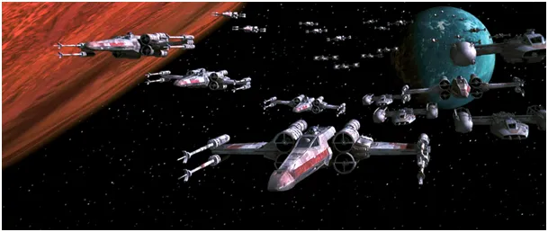
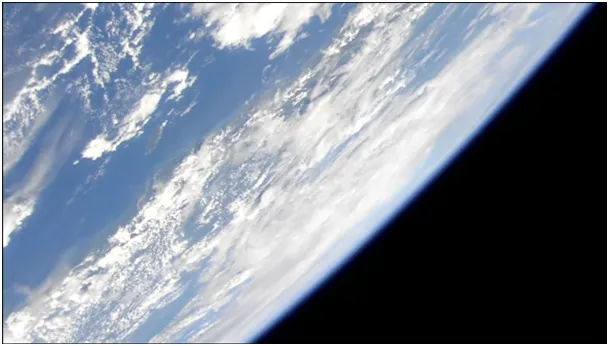
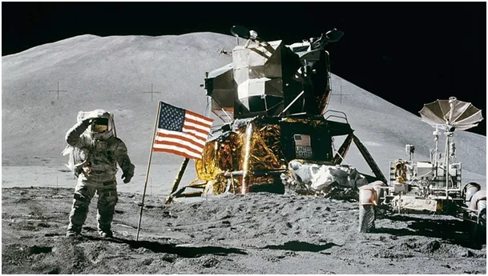
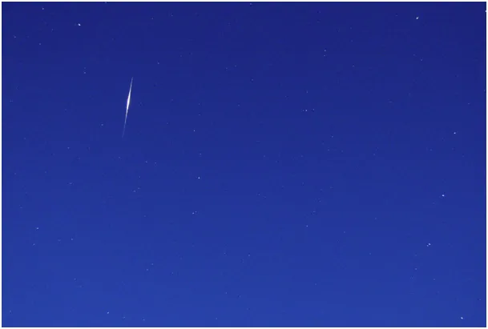

Czy leci z nami pilot? Lecimy po hel 3, czyli po Grala XXI wieku.
Zimą mamy więcej czasu i oglądamy częściej filmy itp. Polecam oglądanie Ziemi z Kosmosu, na pierwszy rzut oka to nudne, ale gdy poza widokiem oceanu dołożymy mapę globu z pozycją satelity i drugą kamerę tego, co pod nami zaczyna się robić ciekawie, nawet nocą, gdy przelatujemy nad wielkimi syberyjskimi miastami, gdzie widać wyraźnie oświetloną drogę łączącą centrum z lotniskiem. Międzynarodowa Stacja Kosmiczna (ISS) już ponad 20 lat jest bazą dla badań kosmosu i mimo, że w nocy gołym okiem widać ją na niebie jest sporo osób, które nie wierzą, że satelity mogą latać. Na moim profilu także jest wiele takich osób, dlatego piszę ten post.
Jedno z moich pierwszych wspomnień to lądowanie na Księżycu w 1969, to wydarzenie do dziś budzi sporo emocji.

Wiele detali na zdjęciach ma świadczyć o fałszu tej wyprawy. Lądowań z ludzką załogą było wiele i być może ze względu na oszczędności któreś było oszustwem, ale to mało istotny detal w całej historii i szkoda czasu na takie dywagacje. Na naszych oczach rozgrywa się kosmiczna bitwa o Księżyc, na którym lada moment powstaną tam kopalnie helu 3 i powątpiewanie w realność tego procesu nie jest rozsądne. Nasze dzieci mogą tam dostać pracę lub być wysyłane jako wojsko do pilnowania kosmicznych szlaków, to już się dzieje.

Hel 3 to izotop (odmiana) pierwiastka hel, którego nie ma na Ziemi a jest uwięziony w księżycowym piasku. Mając taki hel możemy odtworzyć na Ziemi, w reaktorze, proces przemian jądrowych jaki odbywa się na Słońcu, otrzymamy mnóstwo energii i żadnych śmieci, odpadem tej reakcji jest wodór, czyli kolejne wysoce energetyczne paliwo.
Zasoby księżycowe to przynajmniej setki lat energii dla całej ludzkości dlatego jest to kąsek, którym nie pogardzą główne mocarstwa. Wiek XXI to wiek energii, zasoby ludzkie przestają się liczyć, ten jest liderem, kto ma inteligentne roboty i energię. Można swobodnie zaryzykować tezę, że w najbliższej dekadzie rozegra się między USA i Chinami technologiczny i militarny wyścig a jego zwycięzca zgarnie całą pulę odcinając konkurencję od zasobów. Nawet jeśli obie strony będą eksplorować srebrny glob to ten, który pierwszy opanuje tę sztukę z powodu skrajnie taniej energii zdystansuje rywala na Ziemi ekonomicznie lub go wykupi.

Patrzmy częściej w niebo, na którym śmigają i małe i duże satelity, aby nie spadły nam kiedyś na głowę. Jest na orbicie sieć satelitów Iridium, które mają tak duże baterie słoneczne, że rzucają na Ziemię "zajączki", świetlne odbicia Słońca, flary tak mocne, że niszczą one przyrządy optyczne skierowane akurat w ich stronę. Sam korzystałem z programów do łapania tych flar widocznych nawet w dzień jako mocne podłużne rozbłyski. System Iridium jest demontowany, ale jest jeszcze kilka lat, aby się pobawić w "łapanie UFO", bo to te rozbłyski są najczęściej powodem relacji o obserwacji "obcych" . To nie są obcy tylko amerykańska firma telekomunikacyjna, która nam puszcza "zajączki" z nieba. Sprawą zainteresowałem się 15 lat temu, gdy jadąc autem w południe zobaczyłem dokładnie na wprost świetlną smugę na pół nieba. Oczywiście musiałem to wyjaśnić i sprawa okazała się banalnie prosta, odbicie Słoneczne z dużego lustra kilkaset km nad nami.
Paweł Klimczewski